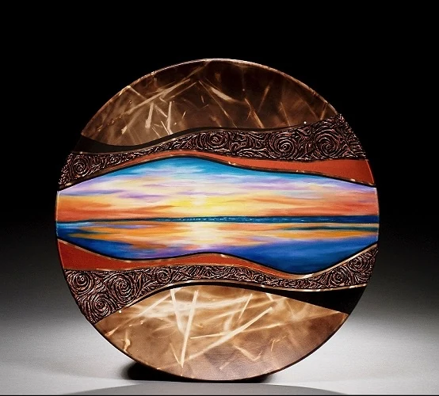
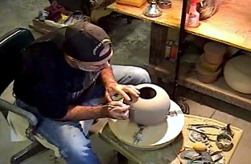
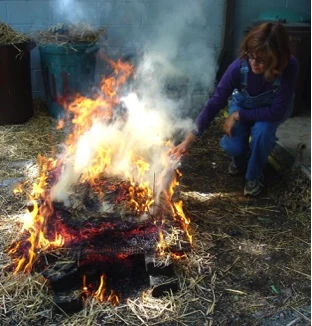
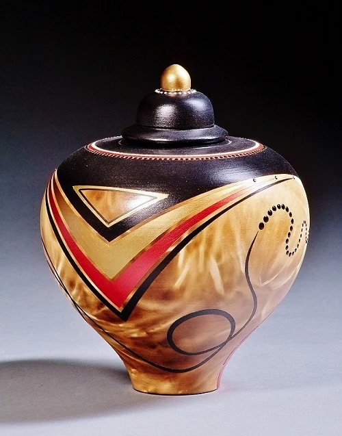
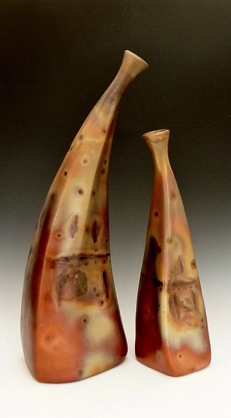
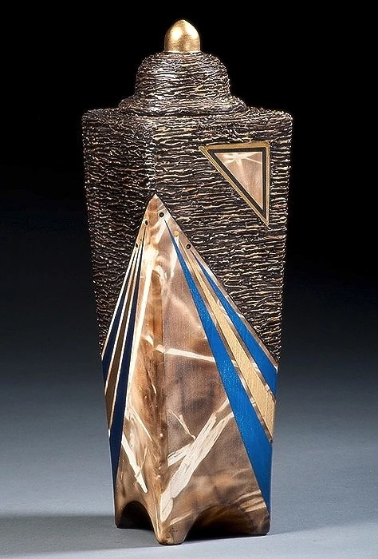
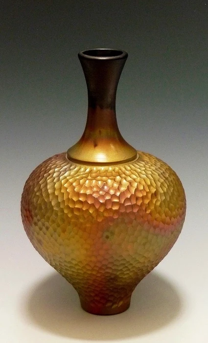
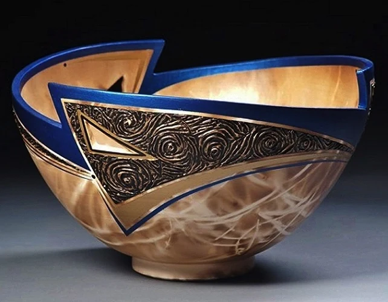
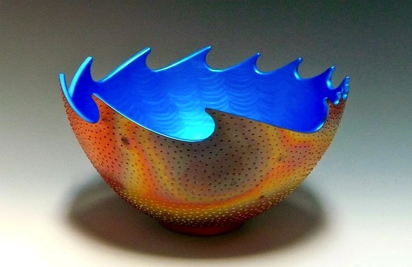
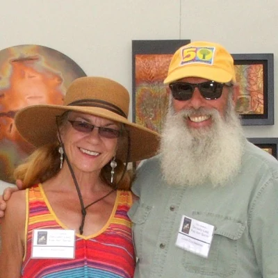

Louis & Christine Colombarini · art clay vessels, made together for nearly 40 years
Clay, fired in sawdust and straw.
Currently, we are involved with two separate and highly specialized techniques focusing on “Neo-Primitive” firing. Let us tell you more.

Neo-Primitive clayworks
Two bodies of work. Two fires.
Our Cosmic Clay journey began nearly 40 years ago as we collaborated in the creation of art clay vessels. Bringing the simplicity of clay to life with perfect form, texture and color has been an ongoing challenge.
As artists, designers, potters, sculptors and chemists, we have taken our audience down visual avenues of classical, abstract, Deco and futuristic design.
Louis Colombarini
Sawdust-fired
Louis's original “neo-primitive” sawdust-fired clayworks: carved and slip-trailed bowls, discs, bottles and sculptural forms.

Louis at the wheel.Christine Colombarini
Straw-fired
Christine's original “neo-primitive” straw-fired clayworks: covered jars, boxes, bowls and discs.

Christine at a straw firing.From the fire
A small sampling of our work. We also make sawdust-fired and straw-fired memorial urns: ask us about them.






Caring for your vessel
Treat each vessel as you would any other valuable art object. The surface has a protective finish, but our vessels will not hold food or water; vase forms can take a liner inside. Clean with a soft, lint-free cloth (mild soap and water if needed, then wipe dry right away) and never use harsh chemicals.
Classes, workshops & gift certificates
Wheel-throwing with Louis. Handbuilding with Christine.
Join master potters Louis and Christine Colombarini in our reasonably priced ceramics classes and workshops. With a focus on wheel-throwing with Louis or handbuilding with Christine, there's truly something for everyone.
- Groups & individuals
- Families
- Life learners
- Birthdays
- Anniversaries
- And more
Give a class
We offer gift certificates for our standalone 3-hour ceramics class.

A little history
Two potters, one studio in the Tennessee hills.
Christine was born in Manitowoc, Wisconsin, and always knew she'd become an artist. She earned her B.F.A. in Ceramics at Florida Atlantic University in Boca Raton, and in the campus clay studio she met her lifelong partner, Louis.
Louis was born in Queens, New York, and graduated from the State University of New York at Geneseo. He moved to Fort Lauderdale, worked as a firefighter for five years and kept studying ceramics at FAU.
Their shared love of clay and country living brought them to the hills of Tennessee, where they have shared a home and studio ever since, creating countless works of clay art.
Buy a vessel · book a class · wholesale
Call us about a piece.
To purchase an original Cosmic Clay vessel or a memorial urn, call or email us. Galleries and dealers: ask us about wholesale.
- Cell
- (931) 314-9059
- cosmicla@dtccom.net
- Studio
- 8252 Old Mill Hill Road
Dowelltown, TN 37059
Secure page on any phone: tap a number and it dials.